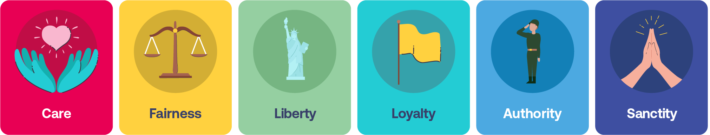

2 Lesson 1 ~ 2
2.0.1 의견 불일치
- 의견 불일치로 당황스러웠던 경험이 있나요? 그 감정엔 다양한 이유가 있지만, 그 중 하나는 ‘뇌가 작동하는 법이다’. 빠르게 변화하는 세상 속, 하나의 기술인 우리의 ’뇌’는 아직 시대에 맞춰 업데이트 되지 못했다!
2.0.2 Mental Shortcuts > 생각의 지름길
- ‘먹거나, 먹히거나!’ 소그룹에서 생존에 관한 문제를 빠르게 결정해야만 했다.
- 정보를 빠르게 처리하기 위해 Mental Shortcuts를 발전시킴.
2.0.3 Our Divided Minds
- 자동화 / 통제 파트 나뉘어짐
- Automatic: 감정적, 직관적 = Autopilot > 엄청 큰 코끼리
- Controlled: 의식적, 분석적 > 코끼리를 타고 있는 사람.
- 직관이 결정을 하면, 의식은 그 결정을 합리화하는데 사용된다. > 그래서 의식적으로 심사숙고해서 결정한 것이라고 착각함.
2.0.4 “Our intuitions come first, our reasoning comes second.”
- 우리의 Rider는 코끼리의 ‘변호사’
2.0.5 Confirmation Bias 확증 편향
- 기존의 신념과 일치하면 쉽게 받아들이고 불일치하면 거절한다.
- 사실과 증거 중 우리 신념과 일치하는 부분만 받아들임.
- 우리의 코끼리 (직관)가 정보를 보고 기존의 느낌, 신념, 경험을 바탕으로 걸러냄 > 확증편향은 코끼리가 만든다!
- 확증편향에 빠져 희생자가 발생하진 않는지?
2.0.6 확증편향을 벗어나는 방법
2.0.7 Step 1. 코끼리가 폭주하는 지 확인한다.
ex. 내 생각 100프로 맞음. 모두가 그렇게 생각해.
2.0.8 Step 2. 다른 관점을 생각해보자!
- 내 의견 외에 다른 의견은 뭐가 있지?
2.0.9 총정리
- 우리의 뇌는 두 가지 시스템이 있다 : 자동적인 것과 통제할 수 있는것
Our brains have two thinking “systems”: automatic and controlled thinking.
우리의 이성은 종종 직관을 따른다
Our reasoning often follows our intuitions, rather than the other way around.
이 두 가지는 상충되는데 우리는 이걸 알아차리지 못한다.
We are prone to consistent errors in our reasoning, and we’re often unaware of it.
우리가 실수하는 이유는 이 두 가지 요소가 의견을 불일치 했기 때문
- These mistakes can shape how we interpret facts and can lead to seemingly intractable disagreements.
2.1 Lesson 2
2.1.1 Us and Them
- 정치적인 신념, 도덕적인 차이는 어디에서 오는가
2.1.2 Let’s Recap
- 이중 처리 : 우리의 뇌에는 직관과 추론 영역이 있다.
직관 : 자동적이고, 빠르고, 의식적이며, 감정적이다
추론 : 느리고, 의식적이며, 노력해야 하고, 논리적이다
우리의 직관이 추론을 이끈다.
2.1.3 Mind Reading
- 정치적 분열에서 코끼리와 탑승자가 어떻게 작동하는지 알아볼 것이다.
2.1.4 What do Republicans Believe?
- 공화당을 믿는 사람들은 어떻게 생각하는가.
2.1.5 How We See Each Other
- 설문조사 자료를 통해 반대편에 있는 사람들도 똑같이 인종차별, 성차별, 총기규제 문제에 대해 걱정하고 있다.
2.1.6 The Perception Gap
- 타인의 실제 신념과 내가 인식하고 있는 그 사람의 신념은 큰 차이가 있다. (인지 차이)
- 거의 모든 사람들이 이러한 인지 차이가 있다.
- 이런 인지 차이는 다른 사람과 얼마나 많은 상호작용을 하느냐에 따라서 인지 차이에 영향을 받는다.
2.1.7 What Creates the Perception Gap
- 에코 룸 : 비슷한 사람들끼리 상호 작용하면 그 사람들끼리 상호작용하며 생각이 점점 강해져서 그 공동체와 다른 공동체와 성격이 분리됨
- 극단적인 관점이 제일 커진다 : 극단적이고 자극적인 이슈가 미디어에서 주목받는다. 그래서 정치적 견해는 이런 양극단이 될 수 밖에 없다.
2.1.8 The Implications
- 우리가 쉽게 생각한 것만큼 나뉘어져 있진 않다.
- 실제로, 섭외한 67%의 미국인들은 이런 극단적인 정치 양극화에 지쳐 있다고 하기도 했다.
2.1.9 Where Do Our Differences Come From?
- 도덕기반이론: 우리의 마음은 6가지의 맛을 느끼는 혀와 같다. 세상에 대해 옳고 그름을 판단하는 기준이 6가지가 있다는 뜻.
- 우리가 맛을 느끼는 체계는 같지만, 각자의 삶의 배경이 다르므로 우리가 맛을 느끼는 정도도 다 다르다
- 돌봄, 공평, 자유, 충성, 권위, 순결
2.1.10 Our Moral Intuitions
- 코끼리가 걸러낸 것으로 라이더가 결정을 한다.
- 우리가 세상에 대한 정보를 처리할 때 코끼리가 가지고 이쓴 도덕 직관 필터로 세상을 이해한다.
- 우리가 미디어를 접할 때 코끼리의 도덕 직관으로 순식간에 필터를 거친다. 이 과정은 정확한 정보를 알기도 전에 이루어진다.
- 그만큼 도덕직관은 강력하게 우리를 이끈다.
2.1.11 Why We Disagree on Right and Wrong
- 우리의 도덕 기반은 우리의 믿음을 이해하는데 도움이 되지만 우리가 왜 정치적으로 다른 견해를 가지는지도 이해할 수 있다.
- 보수적인 사람과 진보적인 사람은 서로 중심으로 두는 가치가 다르다.
2.2 Decoding Language

도덕기반
Care : 보살핌
Fairness : 공평
Liberty : 자유
Loyalty : 충성도
Authority : 권한
Sanctity : 거룩함
의견은 대립되더라도, 비슷한 도덕기반을 사용할 수 있음. 관점이 크게 다른 것 같지만 그렇지 않다!
- 양 쪽의 의견을 다 들어봐라. 한 입장에만 치우치지 말고!
2.2.1 Recap
- 우리는 다른 측면을 실제보다 더 극단적인 것으로 생각한다.
- 우리는 6가지 도덕 기반을 전부 갖고 있다.
- 삶의 경험은 우리의 도덕적 관점을 형성하는데 굉장히 큰 역할을 한다.
- 보수와 진보는 이런 방법의 다른 방법, 정도로 도덕 기반에 의지한다.
- 우리는 사람의 언어를 통해서 그 사람들이 믿고 하는 것에 대해 해독할 수 있다.